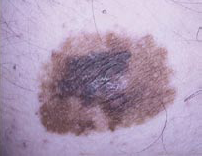
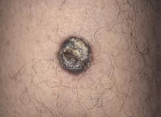
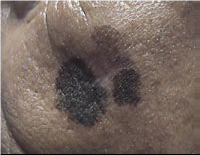
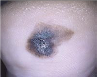

Epidemiología, factores de riesgo, histopatología y biología molecular

1.3 Histopatología y patogénesis
PRINCIPIOS BÁSICOS DE HISTOPATOLOGÍA EN MELANOMA
El método de referencia en el diagnóstico del melanoma continúa siendo el estudio histopatológico. La descripción histopatológica debe reportar información útil para poder establecer la estatificación, el tratamiento y el pronóstico adecuado del melanoma. Durante las primeras fases de la enfermedad, las células tumorales del melanoma están confinadas en la epidermis y, se denomina fase de extensión radial.
Fase de crecimiento radial
En esta fase, que puede durar meses o años, sólo sobreviven las células intraepidérmicas que invaden hasta la capa basal y espinosa de forma radial, de manera que la capaidad de metastatizar es teóricamente nula, y la extirpación quirúrgica sería curativa.
Fase de crecimiento vertical
Se produce la propagación de las células tumorales hacia la profundidad de la dermis reticular y tejido subcutáneo (Niveles III, IV y V de Clark). El tumor adquiere por tanto la capacidad de metastatizar.
Invasión ganglionar ordenada
Ganglio a ganglio, sin existir por lo general saltos. Los ganglios ilíacos, paraórticos y mediastínicos se consideran metastásicos.
Diseminación hematógena
Explica las metástasis en pulmón, hígado, cerebro... y otros órganos.
Sin embargo, tras estas fases iniciales puede iniciarse una fase de crecimiento de vertical en la cual es posible la extensión tanto regional como a distancia:
Nevus congénito o adquirido sin atipias.
Nevus displásico.
Melanoma sin capacidad invasiva.
Melanoma con capacidad invasiva.
Melanoma diseminado.
Dentro de los factores histológicos tenemos:
Índice de Breslow: es el que mejor predice la supervivencia del paciente, dicho índice marca la profundidad de invasión del tumor desde el estrato granuloso de la epidermis:
1. Menor a 1mm
2. 1-2 mm
3. 2-4 mm
4. Mayor a 4 mm
Niveles de invasión de Clark: su influencia en el pronóstico se ha visto desfasada por el índice de Breslow que resulta más exacto:
Nivel I: Epidérmico (melanoma in situ) – Supervivencia del 98% a 5 años.
Nivel II: Epidérmico, con invasión dérmica – Supervivencia del 96% a 5 años.
Nivel III: Afectación de la dermis papilar – Supervivencia del 94% a 5 años.
Nivel IV: Afectación de la dermis reticular – Supervivencia del 78% a 5 años.
Nivel V: Infiltración de grasa subcutánea – Supervivencia del 44% a 5 años.
Ulceración: Se considera un factor de mal pronóstico, con una supervivencia a 5 años menor del 5% cuando el diámetro de la úlcera es mayor a 6mm.
Actividad mitótica: Mide el grado de replicación de las células tumorales, por lo que cuando mayor actividad mitótica, el tumor crecerá más rápido y tendrá peor pronóstico.
Satelitosis microscópica: Nos indica que las células tumorales han infiltrado estructuras cercanas como vasos o la grasa, lo que empeora el pronóstico.
Infiltración vascular o linfática: Indica con certeza la capacidad de metastatización del tumor. Con frecuencia hay falsos positivos, por lo que su valor pronóstico es poco práctico.
Clark et al. describieron y propusieron la clasificación de los melanomas según su fase de crecimiento horizontal (radial) o vertical. En el momento del diagnóstico, el melanoma de extensión superficial, el lentigo maligno o el melanoma lentiginoso de las extremidades se pueden presentar en fase de crecimiento radial o vertical, mientras que el melanoma nodular, generalmente, se diagnostica en fase de crecimiento vertical. La medida del índice de Breslow se realiza con un calibrado, midiendo en forma vertical el grosor del melanoma, desde la capa granulosa de la epidermis hasta donde se observen células tumorales en profundidad. Si la epidermis está ulcerada, la medición debe realizarse desde la base de la úlcera y desde la capa granulosa y deben informarse las dos medidas. Los melanomas invaden la dermis papilar inicialmente, esto corresponde al nivel de Clark II. En este nivel, su capacidad de producir metástasis es mínima. En 40% a 50% de los melanomas los fenómenos de regresión se presentan en esta fase. El fenómeno de regresión se observa al microscopio en tres etapas: la primera consiste en la destrucción de las células del melanoma por el infiltrado mononuclear que las rodea; la segunda consiste en la pérdida de los mononucleares y el inicio de fibroplasia, y la tercera es la fibrosis tumoral ya establecida; en las tres etapas es común la presencia de melanófagos. Esta regresión puede ser parcial, focal o multifocal y raramente es completa. Cuando el tumor invade por completo la dermis papilar y llega al límite de la dermis papilar/reticular, las células tienden a confluir y forman placas o nódulos o pequeños nidos celulares individuales. Este modelo histológico constituye el nivel de Clark III y marca el inicio de la fase de crecimiento vertical. La secuencia de invasión a la dermis reticular y a la hipodermis corresponde a los niveles de Clark IV y V.
El número de mitosis por mm2 se debe estimar con un método de calibración estándar por patólogos entrenados. Se puede considerar de manera general que un mm2 equivale de 3 a 10 campos de 40X.37Diferentes estudios han demostrado que la respuesta inflamatoria del huésped se correlaciona con su pronóstico. Se pueden reportar tres tipos de respuesta: “ausente”, cuando existe infiltración local alrededor del tumor pero sin infiltrar o traspasar el tumor; “débil”, cuando se presenta infiltración escasa focal en la base y el interior del tumor e "intenso", si se presenta un infiltrado denso en toda la base y el interior del tumor.37,51 En una placa histológica se puede observar la aparición de nódulos conformados por células tumorales mayores de 0,05 mm en la dermis y la hipodermis, separados del tumor principal, que se denomina microsatelitosis.
APROXIMACIONES A LA PATOGÉNESIS DEL MELANOMA
El melanoma se produce como resultado de complejas interacciones de factores genéticos y ambientales. El riesgo individual para el desarrollo de este tumor está determinado por la presencia de mutaciones heredadas o polimorfismos en los genes asociados a melanoma y por la magnitud de la exposición solar aguda o crónica recibida a lo largo de la vida.
Los principales genes reconocidos en el melanoma son el CDKN2A y el CDK4, involucrados en el control del ciclo celular. Como se ha comentado previamente, en el 20% a 50% de los casos familiares de melanoma se encuentran mutaciones en CDKN2A. Los polimorfismos en el receptor MC1R, clave en la formación de melanina en respuesta a la radiación ultravioleta, también están asociados con incremento en el riesgo de melanoma. Se han encontrado mutaciones en PTEN, un gen involucrado en la inducción de proteínas supresoras del ciclo celular y de la apoptosis, en 30% a 60% de los melanomas no familiares.
TIPOS HISTOLÓGICOS DE MELANOMA
Los cuatro subtipos clásicos del melanoma cutáneo son en orden decreciente de frecuencia: melanoma de extensión superficial, melanoma nodular, lentigo maligno melanoma y melanoma lentiginoso acral. También existen numerosos subtipos menos frecuentes a nivel extracutáneo como son el melanoma de mucosas y el melanoma ocular.
Melanoma de extensión superficial
Es la variedad más común y supone alrededor del 70% de los melanomas cutáneos. La edad media en el momento del diagnóstico es de 44 años y tiene una evolución que oscila entre 1-5 años. Puede aparecer en cualquier zona del cuerpo, siendo más frecuente en el torso en los varones y en extremidades inferiores en las mujeres. Aproximadamente, un 50% de los pacientes tienen historia de nevus benigno en la zona. Se trata de una lesión de bordes asimétricos, irregulares y sobreelevados. Un dato característico de este tumor es la presencia de una coloración blanco grisáceo en el centro de la lesión.
Melanoma nodular
Es el segundo tipo en frecuencia, representando el 10-15% de todos los casos de melanoma. También es la forma más agresiva y con mayor tendencia a metastatizar. Puede desarrollarse en cualquier zona del cuerpo, siendo más frecuente en el torso en los varones y en las piernas en las mujeres. Se da en edades comprendidas entre los 45-55 años. Aparece sobre la piel normal y con menor frecuencia sobre un nevus preexistente. Es una lesión hemisférica, sobreelevada, de color azul negruzco uniforme, marrón rojizo o negro grisáceo y rodeada de piel normal. Aunque en un 5% de los casos se consideran amelánicas, siempre existe alguna zona de color oscuro en su interior. Tiene un crecimiento muy rápido, sin fase de crecimiento radial, y por ello es invasivo desde el primer momento.
Lentigo maligno melanoma
También denominado lentigo de Hutchinson, es más frecuente en la cara y las zonas expuestas al sol en el anciano, en la séptima u octava décadas de la vida. Supone el 4-15% de todos los melanomas. Su lesión precursora, el lentigo maligno, es una mácula irregular y pigmentada heterocrómica que crece lentamente. Presenta una fase de crecimiento radial larga (de 5 a 15 años, o incluso más) y, cuando empieza la fase de crecimiento de vertical, la lesión se engrosa de forma característica y se transforma en placas sobreelevadas con pequeños nódulos. Por tanto, se habla de lentigo maligno cuando la lesión está limitada a la epidermis, y de lentigo melanoma maligno cuando se hace invasivo. El riesgo de transformación de un lentigo maligno en un melanoma infiltrante es muy variable, oscila entre un 2,2 y un 30%.
Melanoma lentiginoso acral
Es el menos frecuente, representando el 2-8% de los melanomas, aunque es la forma más frecuente en personas de raza negra o asiáticos. Se localiza especialmente en la palma de las manos, planta de los pies y región periungueal. Generalmente se observa en personas mayores, con una media de edad de 65 años. Es un tumor muy agresivo, con gran tendencia a metastatizar y una elevada mortalidad.
Tipos de melanoma cutáneo:
Tipo de melanoma |
Frecuencia raza blanca |
Edad media |
Área corporal preferente |
Crecimiento radial |
Factores ambientales predisponentes |
Particularidades |
|---|---|---|---|---|---|---|
|

Extensión superficial |
70% |
4º-5º |
Mujer: miembros inferiores Varón: espalda |
SI |
Exposición solar intermitente |
Melanoma más frecuente |
|

Nodular |
10-15% |
6º |
Tronco, cabeza y cuello |
NO |
Probable relación exposición solar |
Los amelanocíticos se confunden con lesiones banales |
|

Sobre lentigo maligno (LLM) |
5-10% |
7º-8º |
Cara |
SI |
Exposición solar crónica |
Muy lento crecimiento |

Lentiginoso acral |
5-12% |
7º |
Palmas, plantas, subungueal |
SI |
No relación con exposición solar |
Tardan en ulcerarse pro gruesa capa córnea 70% negros, 45% asiáticos |
Los melanomas extracutáneos también se clasifican en diferentes grupos ya que se trata de una agrupación muy heterogénea de tumores con claras diferencias patogénicas. Se pueden clasificar en los siguientes grupos: melanoma ocular, de mucosas y de otros órganos.
Melanoma ocular
El melanoma de úvea es la neoplasia primaria más frecuente del ojo, con una alta incidencia de metástasis siendo muy frecuentes en el hígado. Se localizan con poca frecuencia en el iris (suponen un 8%) y fundamentalmente en cuerpo ciliar y coroides, siendo el 12 y 80% respectivamente.
Melanoma de mucosas
Tiene un pronóstico peor que el melanoma cutáneo, principalmente en relación con su diagnóstico tardío, ya que se localiza en zonas poco visibles. La mediana de edad en la presentación es la séptima década de vida, y es más frecuente en la mujer.
Clasificación de los melanomas extracutáneos
|
Melanoma ocular |
|
Melanoma uveal o coroide |
|
Melanoma del iris |
|
Melanoma de la conjuntiva |
|
Melanoma de la órbita |
|
Melanoma de mucosas
|
|
Melanoma de otros órganos y tejidos |
|
Melanoma meníngeo |
Definición:
Índice de Breslow
Medida de la profundidad hasta la que creció un melanoma en la piel. El grosor del tumor (profundidad) habitualmente se mide desde el tope del tumor hasta las células tumorales más profundas. Si el tumor tiene úlceras (la piel está rota), se mide desde la base de la úlcera hasta las células tumorales más profundas. El grosor de Breslow se usa para ayudar a determinar el estadio del cáncer ya que los tumores más gruesos se relacionan con tasas de supervivencia más bajas.
Conclusión:
El método de referencia en el diagnóstico del melanoma continúa siendo el estudio histopatológico de la lesión sospechosa. La descripción histopatológica debe reportar información útil para poder establecer la estatificación, el tratamiento y el pronóstico adecuado del melanoma, especialmente el índice de Breslow y la presencia o no de ulceración en la muestra analizada.